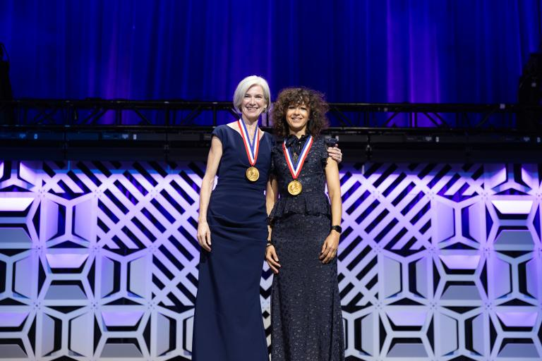

4. Revolutionary Transition: From Immune System to Gene-Editing Tool (2012-2013)
2012: Programmable DNA Targeting
2013: Application in Mammalian Cells
5. Rapid Expansion and Innovation (2014-Present)
2014-2015: Expanding the CRISPR Toolbox
2016-2017: Base Editing Revolution
2019: Prime Editing
2020: Nobel Prize Recognition

Jennifer Doudna and Emmanuelle Charpentier, co-developers of CRISPR-Cas9 gene-editing technology. Image source: National Inventors Hall of Fame (invent.org)